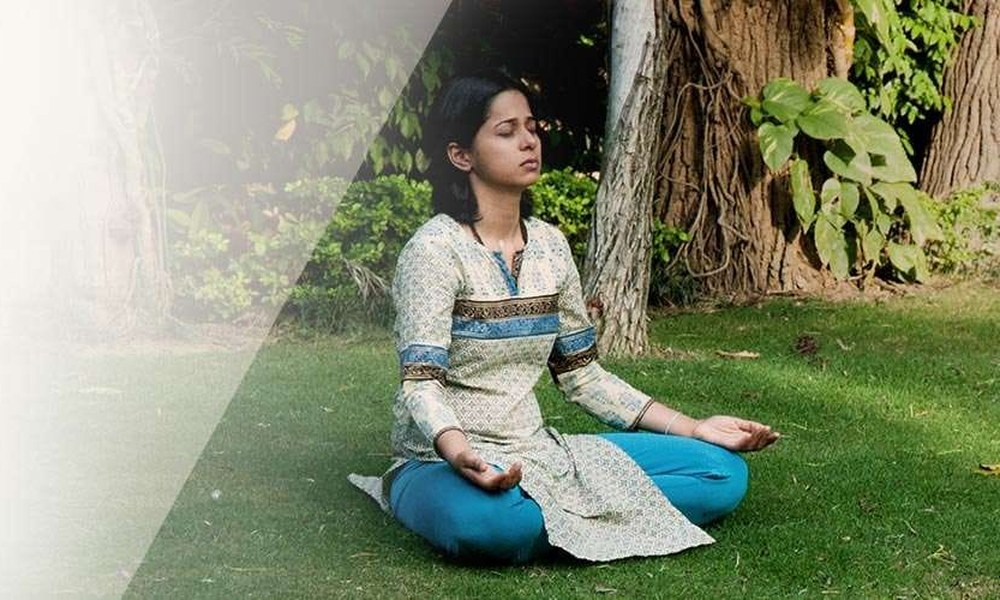
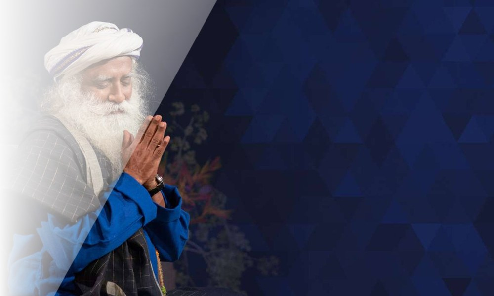
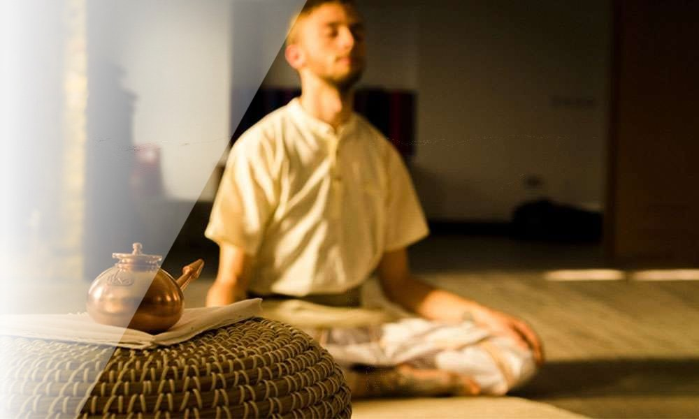

Surya Kriya

Surya Shakti

Angamardana

Yogasanas

Bhuta Shuddhi

Isha Kriya

Chit Shakti

AUM Chanting

Nada Yoga

Yoga Namaskar

Jala Neti
Die Praktiken auf einen Blick
| Praxis | In einem Satz | Am besten für dich, wenn… |
|---|---|---|
| Upa Yoga | Einfache 5-Minuten-Prozesse — „Pre-Yoga" für Gelenke, Energie und Stressabbau | Du noch nie Yoga gemacht hast, es kostenlos ausprobieren willst oder Werkzeuge für hektische Tage suchst |
| Surya Kriya | Die ursprüngliche Sonnenpraxis — Gesundheit und spirituelle Tiefe in einem | Du eine tägliche Praxis mit beidem willst — Gesundheit und Tiefe |
| Surya Shakti | Die dynamische, körperliche Sonnenpraxis — Kraft und Ausdauer | Du Spitzenfitness aus einer klassischen Quelle willst |
| Angamardana | Peak Fitness nur mit deinem eigenen Körper — 31 Prozesse | Du intensive Fitness ohne Fitnessstudio willst — überall praktizierbar |
| Yogasanas | 84 klassische Haltungen — subtile Prozesse, kein Workout | Du Tiefe und Präzision willst — die klassische Asana-Wissenschaft |
| Bhuta Shuddhi | Reinigung der fünf Elemente — die Praxis unter allen Praktiken | Du das tiefste Fundament der yogischen Wissenschaft willst |
| Isha Kriya | Eine kostenlose geführte Meditation auf der Grundlage einer transformierenden Wahrheit — in einer einzigen Sitzung erlernbar | Du willst einen echten, mühelosen Einstieg in die Meditation — kostenlos und ohne Einweihung |
| Chit Shakti | Geführte Meditationen, die den Geist zu einem Instrument der Verwirklichung machen | Du hast ein klares Ziel — und willst dein ganzes System dahinter ausrichten |
| AUM Chanting | Der Urklang der Existenz — eine vibrale Technologie, kein Glaubensritual | Du willst eine Morgenpraxis, die beruhigt und belebt — ohne körperliche Anforderungen |
| Nada Yoga | Das Yoga des Klangs — vom ersten Chant bis zum ungeschaffenen Klang der Existenz | Du bist von Musik und Klang berührt — der klassische Pfad für musikalische Menschen |
| Yoga Namaskar | Eine Sieben-Schritte-Praxis für die Gesundheit der Wirbelsäule — und das emotionale Wohlbefinden, das darauf ruht | Du sitzt den ganzen Tag oder trägst tiefen emotionalen Stress — die Wirbelsäule hält beides |
| Jala Neti | Reinigung der Nasenpassagen mit Salzwasser — der klassische Reinigungsschritt für freies, ungehindertes Atmen | Du hast mit Nebenhöhlen, Allergien oder verstopftem Atmen zu kämpfen — oder willst die klassische Reinigungspraxis |
Der 30-Sekunden-Entscheider
- Noch nie Yoga gemacht? → Upa Yoga — „du kannst es nicht falsch machen — es ist sehr einfach!" — in fünf Minuten erlernbar, kostenlose Werkzeuge verfügbar
- Fitness aus einer klassischen Quelle? → Angamardana oder Surya Shakti — volle Fitness ohne Ausrüstung
- Eine tägliche Praxis mit Gesundheit UND Tiefe? → Surya Kriya — die ursprüngliche Sonnenpraxis, „ein vollständiger spiritueller Prozess für sich"
- Die klassische Haltungswissenschaft? → Yogasanas — 84 Haltungen, kosmische Geometrie, Asana Siddhi
- Das Fundament unter allem? → Bhuta Shuddhi — „jeder Aspekt des Yoga, den du machst, ist nur eine kleine Extraktion aus den Bhuta-Shuddhi-Praktiken"
- Neugierig und bereit? → Mit Upa Yoga beginnen, dann die tieferen Praktiken, wenn das Interesse wächst
Was sie alle gemeinsam haben
- Richtig gelernt, von einem Lehrer — „Yoga ist ein zu subtles und feines System, um nur in Worten vermittelt zu werden." Die tieferen Praktiken sind Übertragung — „Dies kann nicht in einem Buch gelehrt werden, denn es ist ein Prozess der Übertragung, nicht der Unterweisung." — und gehören dir dann ein Leben lang
- Tägliche Regelmäßigkeit vervielfacht alles — Sadhguru über die Praxis: „Wenn du regelmäßig in deiner Praxis bist, wirst du sehen, wie du das Leben hundertfach besser erleben wirst. Wenn du unregelmäßig bist, bist du wieder bei null."
- Keine Lebensstil-Änderung nötig — die Praktiken wurden für gewöhnliche Menschen entworfen, die erhöhte Zustände von Energie und Wahrnehmung gewinnen wollen, ohne Familie und Berufsleben zu stören
Häufige Fragen
Muss ich dehnbar/flexibel sein? Nein — keine Flexibilität oder Fitness ist nötig, um eine dieser Praktiken zu erlernen. Sie werden Schritt für Schritt unterrichtet.
Ich habe zu wenig Zeit. Welche ist die kleinste? Upa Yoga — einzelne Prozesse dauern etwa fünf Minuten und können überall gemacht werden, ohne Ausrüstung.
Ich will Fitness, aber aus einer echten Tradition. Angamardana (Beherrschung des ganzen Körpers) oder Surya Shakti (dynamische Sonnenpraxis) — beide nur mit dem eigenen Körper, ohne Geräte.
Kann man diese Praktiken aus Videos oder Büchern lernen? Nein — die tieferen Praktiken sind Prozesse der Übertragung: „Dies kann nicht in einem Buch gelehrt werden, denn es ist ein Prozess der Übertragung, nicht der Unterweisung." Sie werden direkt von einem ausgebildeten Lehrer gelernt und gehören dir dann ein Leben lang.
Quellen
Quellen: Offizielle Isha-Programmseiten (isha.sadhguru.org); SadhguruLM-Notizbuch (49 Quellen, wörtliche Zitate).